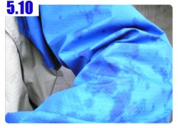
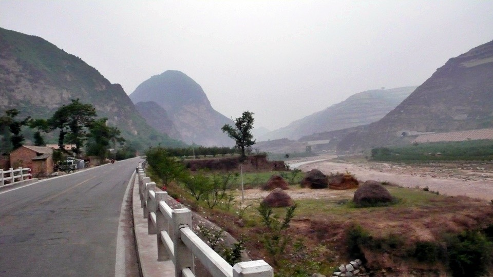
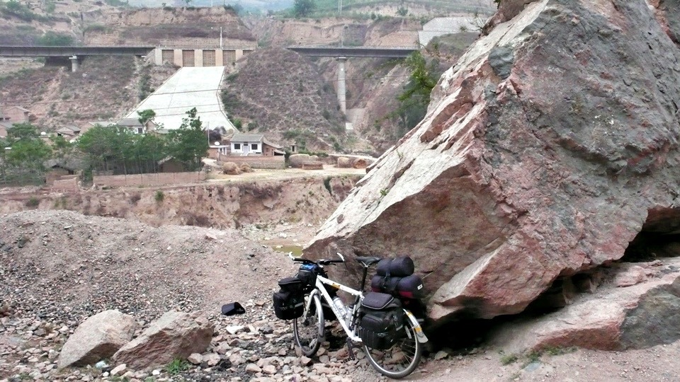
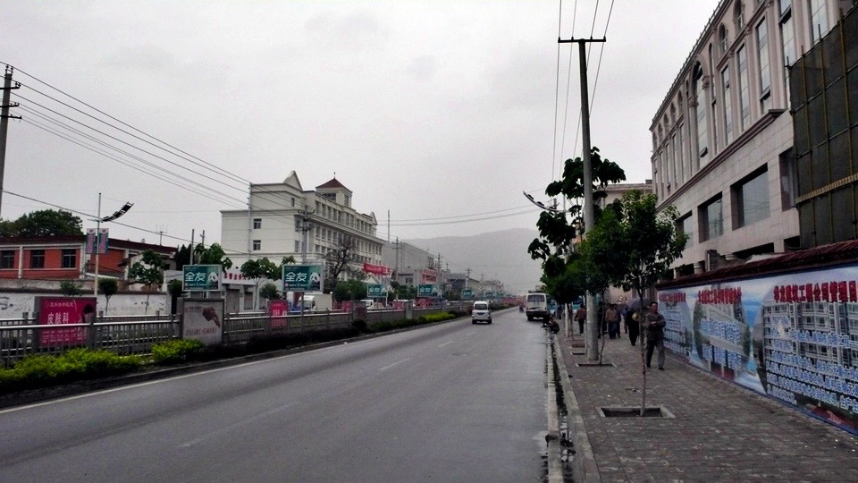

清晨四點多，從溫暖的被窩中爬起來尿尿時，外頭的風好冷呀>"<
雖然說是清晨，但是也未免太冷了一點吧，發著抖撒完尿，趕緊躲回溫暖的被窩中。
昨天隔壁飯館裡喝酒划拳的聲音一直到將近午夜，所以睡得不是很好，趕緊補眠一下。
本來只睡我一個人的房間，不知道什麼時候又多了一個人睡房裡，打鼾的聲音大作。
早上六點重新起床，開始收拾行李，那個打呼的人也起床了。
昨天他跟這邊的朋友一票人，外加餐廳的兒子，也就是那個廚師，九個人喝了七『捆』酒。
這個單位是多少呀@@"沒聽過耶。只聽過一『手』＝六瓶。
原來一捆是九瓶，真是瘋了，九個人居然喝了六十三瓶玻璃瓶裝的啤酒！
六點半多，準備要出門了，但是餐廳的門還是鎖的，這樣我就不能補充開水，也不能拿回住房的押金。
繞到後門去，走上二樓，把喝掛的兒子搖醒，說我要準備出發了。
補充完開水，買了兩元的饅頭當早餐路上慢慢啃，外頭已經七點，但是看起來卻像是五點，
一點陽光也沒有，整個霧濛濛的，而且溫度很低，大概只有18度上下吧。
心裡還蠻開心的，這樣就可以涼快的騎車，不用曬太陽。

因為這邊廁所的味道太嗆了，所以我沒在這裡上廁所。
出發一個多小時就想拉屎，可是這裡哪來的廁所呀？
將小多停在『坍方落石區，請注意行駛』的大石頭旁邊，我就跑到大石頭後面，看著群山大便。

半路上看到路旁有一隻狗在徘徊，直覺告訴我這隻狗不懷好意。
所以先拿出CS瓦斯，打開保險栓在手上備用，果然我一騎經過牠，牠就在我的右後方追了上來。
死命的追我但是又不吠，會咬人的狗不會叫大概就是像這樣吧。
差不多在狗距離我右後方兩公尺左右，我用CS瓦斯對準牠連噴了四～五次。
一開始覺得怎麼沒效，牠還是一直追上來呀，正當我準備等牠再近一點，就用腳踹牠的時候，
牠突然停下了腳步，不知道是追累了還是CS瓦斯生效了？
出發三個小時後，在山裡就下起了這次旅行的第一場雨。
雨來的又快又急，沒有遮蔽的地方，所以瞬間就被雨水打濕了。
天空雖然霧霧的，但是看起來不像是會下大雨的天氣，所以我很掙扎要不要穿雨衣，
還有要不要把背包的防水袋一個一個的罩起來，因為我很怕麻煩~_~

淋著小雨，騎了大約五分鐘的車，雨居然就停了。
心裡好開心，第一場雨就這麼輕鬆的結束了，還好剛剛沒有穿雨衣跟套防水袋，不然現在又要開始脫了。
本來看地圖估計今天大概騎個50公里就可以離開山區，結果騎了70多公里還是在山裡面，真的很奇怪。
中午十一點的時候，在一個叫做伯陽鄉的地方，稍做休息，吃了一碗蘭州牛肉麵。
麵條很細很幼秀，湯頭很香辣好喝，但是牛肉超小塊的=..=
跟那種15元的袋裝牛肉泡麵裡那種乾燥牛肉渣一樣，跟蔥花差不多大小的牛肉，只有三粒。
不過一碗只有三塊錢的牛肉麵，也就別抱怨肉很小塊了，但這應該不是小不小塊的問題，而是找不找的到的問題/_\
因為在山區裡面，這種天氣感覺隨時都會下雨，所以吃飽後沒什麼休息，接著就上路，想要早點離開。

從伯陽鄉開始，剛騎上路，雨滴又下來了。
心裡還是很掙扎著要不要穿雨衣跟套防水袋，估計著大概沒五分鐘雨就會停了，可是這次再也不停了。
接著爬了五公里的上坡，雨越下越大，可是我就像是冷水中慢慢加溫的青蛙，
一開始覺得很麻煩，所以不想穿雨衣，後來雨已經大的快看不見路的時候，我則是賭氣的不想穿雨衣。
反正都淋的這麼濕了，穿不穿雨衣有什麼差別，我到要看看這雨能下多久？
一淋就是一個小時，低溫加上大雨，全身冰冷，眼鏡也都是雨滴。
看到路旁有一間穆斯林餐館，在那休息順便喝點熱湯暖身子，小多也放在儲藏室躲雨一下。

拿下又濕又冰的頭巾，再包下去肯定要感冒的，脫掉滴水的風衣外套，
裡面穿的長袖排汗衣也濕了，袖子部分可以擰出一堆的水來，襪子和鞋子也是濕的，
在店裡喝著熱茶，又點了孜然羊肉和酸辣肉絲湯，雖然才剛吃過午餐，
但是淋過雨之後肚子特別餓，真想吃點什麼熱的東西到肚子裡把寒氣逼出來。
等我把食物一掃而空的時候，外頭的雨已經小很多了，只剩下毛毛的雨絲在飄著。
可是風還是很大，吹著我身上濕濕的衣服，真是冷到受不了，體溫一直在降低。
這時候終於不賭氣也不偷懶了，拿出雨衣穿起來，
東西貴的真是有價值，雨衣一穿起來身上就暖呼呼的，冷風吹不進來，濕氣卻可以慢慢排出去。
看起來是很乾淨的雨水，在眼鏡上乾掉之後，居然留下泥巴般的水漬，換一副眼鏡繼續騎車。
風慢慢的吹著，身上的衣服也開始乾了起來，但還是很冷就是了/_\
有點擔心剛剛陪我一起淋雨的背包們，在沒有罩防水袋的情況下，不知道防水的效果怎麼樣？
在爬坡的時候，前面路旁有五個小鬼，因為這時候下雨，而且我又很疲憊，所以沒有搭理他們的嬉鬧。
結果他們居然以為我不是中國人，聽不懂中文所以不理他們，然後在後頭用日文罵我？
真是一群很欠揍的死小孩！
等爬完伯陽鄉之後的超級大上坡和大下坡之後，終於離開了山區。
沒多久就進入了城市，我直覺得以為這邊就是天水了，終於到今天的目的地，可以好好休息了。
才騎八十幾公里，可是今天感覺比一口氣騎兩百公里還要疲憊。

找了一間一晚上15塊的旅館，先換上乾爽的衣物，然後將背包通通打開通風，讓濕氣散掉。
在沒有罩防水袋的情況下，這些背包通通沒讓我失望，裡面幾乎沒什麼進水，只是東西都很冰涼。

將GPS的軌跡抓出來看，才發現原來今天落腳的地方不是天水，而是北道。
兩個城市差了約20公里，今天休息的太早了一點，都還沒騎到目的說。
窩在旅館的被窩裡面，身體慢慢從冰冷暖和起來，可是一直都很愛睏。
現在下午三點而已呀，要睡覺也嫌太早了一點吧@@"
在網吧悠哉一下，到現在已經是中國網吧的老手XD
『開卡』、『退卡』這些術語我都很熟了。
中國的網吧當然沒有設定注音輸入法，都是各式各樣的拼音輸入而已，可我只會打注音。
有些電腦網管沒那麼機車的話，還可以自己補安裝注音輸入法，不然只好用破破的英文~_~
看到其他B2P的成員也很順利的在旅行中，比較快的已經騎到沙漠裡了，看到那照片好令我羨慕呀*^^*
再過一個星期我也會騎入沙漠吧～
中午吃的太飽了一點，那盤孜然羊肉的味道還在嘴裡回味。
晚餐很吃不下@@"就去雜貨店買了一包五香花生配一瓶果汁牛奶。
八點多，正在看書準備要睡覺的時候，房門被打開了，服務員帶了另一個人跟我住同一間~_~
因為這是雙人房，便宜的代價就是會被隨意湊房，還好看起來是一個和善的小鬍子大叔。
趕緊先把打開通風零散的行李都先收拾好，以免遭人覬覦。
小鬍子大叔是卡車司機，跑貨運的，重慶人，稍微聊一下天，發現跑貨運真是一個神奇的工作。
他先從A地送一批貨到B地，然後就變成空車了，就在B地那邊找看看有沒有什麼東西可以運送的，
好像有專門的運送集散地可以去那邊接生意，不管接到什麼，他都照跑，再送去C地，然後再找新生意。
某種程度來說，這算是開著卡車維生兼流浪的生活吧！
不知道明天自己會跑去哪裡的日子，有點滄桑也很豪派。
既然小鬍子大叔是司機，那就問他怎麼走去蘭州比較好走？
結果不論是走南方的316國道，或是走北方的小路，都是要翻過很多座的山，騎自行車沒有好走的路，
可是我又不能上高速公路，看來這一路上爬山爬到腳斷掉了。
看著地圖思考了一下明天的路線該怎麼走？
南方的316國道，因為是國道，所以路會比較好，沿路的食宿也很充裕，不用擔心餓肚子和睡街頭，
相對的國道的大卡車超多，一直被喇叭叭真的很不爽，同時這條路繞的有點遠，兜了一圈才到蘭州。
北方的小路，連名字都沒有(可能我的地圖比較遜)，但是比較接近是直線的方式往蘭州移動，
只是會不會迷路在山裡就不知道了，而且說不定小路的路況比較差，騎自行車會很艱辛。
兩條路各有利弊，走國道是最穩當的方式，只要一直跟著國道走，總有一天會到達。
但是從北京出發到現在，除了前兩天迷路在山裡，風景很漂亮以外。
其餘的十幾天，從北京一路到西安的路上，那風景真是乏善可陳，騎的我都想打瞌睡了zzZZ
要走國道還是走小路，讓我很難下決定，就一邊思考明天的路線，一邊就愛睏了...
臨睡前，把所有的背包都放在床上，然後我才能安心的入眠，雖然小鬍子大叔看起來不像壞人，但還是小心一點好，
沒事就早一點休息，好好補足體力！睡覺萬歲！賴床無罪！
繼續閱讀：5.11 騎乘在山脊
中國-人民幣－ 1：4.3 台幣
5.10
總計：54元
早餐饅頭2元、午餐蘭州牛肉麵3元、酸辣肉絲湯6元、孜然羊肉18元、住店15元、網吧兩小時4元、五香花生2元、果汁牛奶4元